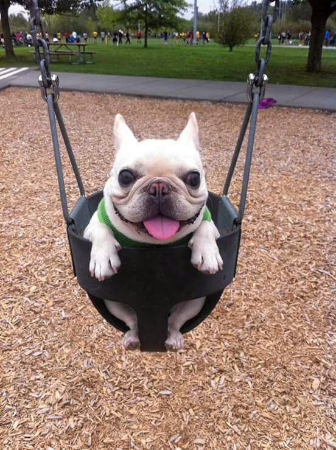
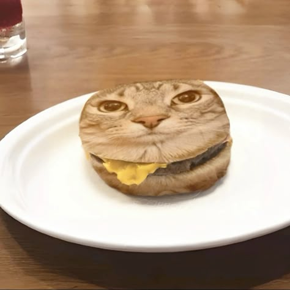

Universidad Cristobal Colón
Luis Angel Ceron Castro
Imágenes de Mascotas Varias


Introducción a los Cuidados de las Mascotas
Cuidar de una mascota requiere responsabilidad y dedicación. Es importante brindarles una alimentación adecuada, atención médica regular y mucho cariño para garantizar su bienestar.
Tipos de Mascotas
- Perros: Compañeros leales y protectores.
- Gatos: Independientes y cariñosos.
- Aves: Alegres y coloridas.
- Peces: Tranquilos y relajantes.
- Roedores: Pequeños y juguetones.
Ventajas de Tener una Mascota en Casa
- Reducen el estrés y la ansiedad.
- Fomentan la actividad física y el ejercicio.
- Brindan compañía y afecto.
- Ayudan a mejorar la socialización.
- Pueden mejorar la salud mental y emocional.
Desventajas de Tener una Mascota en Casa
- Requieren tiempo y compromiso.
- Pueden generar gastos adicionales en alimentación y cuidado veterinario.
- Algunas mascotas pueden causar alergias.
- Necesitan un ambiente adecuado y suficiente espacio.
- Pueden causar daños en muebles y objetos del hogar.
Adopción de Mascotas
Dar una segunda oportunidad a un animal en busca de hogar es un acto de amor y compromiso. Adoptar una mascota no solo cambia su vida, sino también la tuya. ¡Anímate a adoptar y bríndales un hogar lleno de cariño!
Tabla :
| Rango de edades |
Mujeres |
Estatura |
Peso |
Hombres |
Estatura |
Peso |
Promedio general |
Estatura |
Peso |
| 5-10 |
0.1 |
35 |
30kg |
3 años |
1.20 |
30kg |
1.15 |
32kg |
| 11-15 |
0.98 |
36 |
34kg |
2 años |
1.30 |
35kg |
1.25 |
34kg |
| 16-20 |
1.50 |
40 |
58kg |
4 años |
1.70 |
60kg |
1.65 |
58kg |
| 21-30 |
1.60 |
41 |
63kg |
1 año |
1.75 |
65kg |
1.70 |
63kg |
| 31-35 |
1.70 |
42 |
68kg |
5 años |
1.80 |
70kg |
1.75 |
68kg |
| 35-40 |
1.73 |
44 |
73kg |
3 años |
1.85 |
75kg |
1.80 |
73kg |
asd